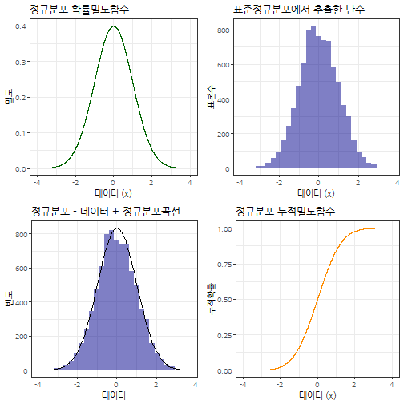
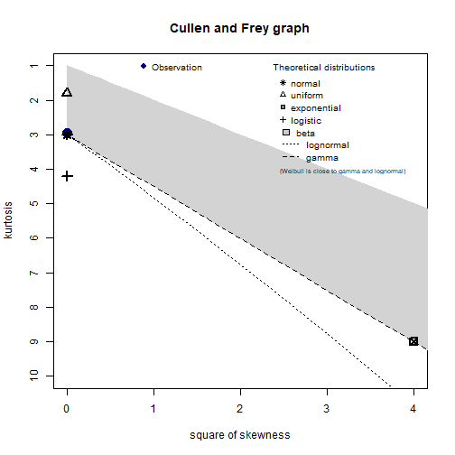

데이터 과학을 위한 R 알고리즘
최대우도법(Maximum Likelihood Estimation, MLE)
1. 우도와 확률밀도함수
확률밀도함수(PDF)는 그 자체로 미래지향적이지만, 상대적으로 우도함수는 과거지향적이다. 왜냐하면, 데이터가 주어진 상태에서 데이터가 나온 분포를 가정하고 모수를 추정해야 되기 때문이다.
2. 정규분포 1
정규분포(正規分布, normal distribution)는 연속 확률 분포의 하나로, 중심극한정리에 의하여 독립적인 확률변수들의 평균은 정규분포에 가까워지는 성질이 있기 때문에 수집된 자료의 분포를 근사하는 데에 빈번하게 활용된다.
\[f(x \; | \; \mu, \sigma^2) = \frac{1}{\sqrt{2\pi\sigma^2} } \; e^{ -\frac{(x-\mu)^2}{2\sigma^2} }\]
- \(\mu\)는 정규분포의 중심을 나타내는 척도로 자주 사용되는 평균.
- \(\sigma\)는 분포의 퍼짐을 나타내는 척도로 자주 사용되는 표준편차
- \(\sigma^2\)는 표준편차를 제곱한 분산
2.1. 정규분포 우도함수
정규분포에서 나온 데이터 각각의 독립성을 가정하면, 결합밀도함수를 모두 곱해서 표현할 수 있다.
\[\mathcal{L}(\theta) = \prod_i f_{\mu, \sigma}(x_i) = \prod_i \frac{1}{\sqrt{2 \pi} \sigma} \exp(\frac{-(x_i - \mu)^2}{2 \sigma^2})\]
그리고, 양변에 로그를 취하여 수식을 다음과 같이 정리할 수 있다.
\[\mathcal{L}^*(\theta) = -\frac{n}{2} \log{2\pi} - n \log \sigma - \frac{1}{2 \sigma^2} \sum_i {(x_i - \mu)^2}\]
이제 우도를 최대화하는 모수를 찾기 위해서 양변을 \(\mu\)로 편미분해서 정리하면 \(\mu\)를 구할 수 있다. \[\frac{\partial}{\partial \mu} \mathcal{L}^*(\theta) = \frac{1}{\sigma^2} \sum_i (x_i - \mu)= \frac{1}{\sigma^2} (\sum_i x_i - n \mu) = 0\]
\(\mu\)에 대해서 정리하면 \(\widehat \mu = (\sum_i x_i) / n\) 이 된다.
마찬가지 방법으로 \(\sigma\)에 대해서 편미분하여 정리하면 \(\sigma\)도 구할 수 있다.
\[\frac{\partial}{\partial \sigma} \mathcal{L}^*(\theta) = -\frac{n}{\sigma} + \frac{1}{\sigma^3} \sum_i (x_i - \mu)^2 =0\]
\(\sigma\)에 대해서 정리하면 \(\sigma^2 = \sum_i (x_i - \mu)^2 / n\)을 얻게 된다.
2.2. 정규분포 시각화
정규분포의 특성을 살펴보고자 난수를 추출하여 정규분포 확률밀도함수, 누적분포함수를 정규분포에서 추출할 난수와 함께 시각화를 한다.
# 1. 정규분포 ----------------------------------------
# https://www.r-bloggers.com/normal-distribution-functions/
xseq <- seq(-4, 4, .001)
normal_densities <- dnorm(xseq, 0,1)
normal_cumulative <- pnorm(xseq, 0, 1)
normal_smpl <- rnorm(length(xseq), 0, 1)
normal_df <- data.frame(xseq, normal_densities, normal_cumulative, normal_smpl)
normal_density_p <- normal_df %>%
ggplot(aes(x=xseq, y=normal_densities)) +
geom_line(color="darkgreen") +
theme_bw(base_family="NanumGothic") +
labs(x = '데이터 (x)', y ='밀도', title="정규분포 확률밀도함수")
normal_cummulative_p <- normal_df %>%
ggplot(aes(x=xseq, y=normal_cumulative)) +
geom_line(color="darkorange") +
theme_bw(base_family="NanumGothic") +
labs(x = '데이터 (x)', y ='누적확률', title="정규분포 누적밀도함수")
normal_sample_p <- normal_df %>%
ggplot(aes(x=normal_smpl)) +
geom_histogram(aes(y = ..count..), bins = 30, fill = 'darkblue', alpha=0.5) +
theme_bw(base_family="NanumGothic") +
labs(x = '데이터 (x)', y ='표본수', title="표준정규분포에서 추출한 난수")
normal_data_fit_p <- ggplot(normal_df, aes(normal_smpl)) +
geom_histogram(aes(y = ..count..), bins = 30, fill = 'darkblue', alpha=0.5) +
theme_bw(base_family="NanumGothic") +
scale_y_continuous(labels = scales::comma) +
labs(x = '데이터', y ='빈도', title="정규분포 - 데이터 + 정규분포곡선") +
stat_function(
fun = function(x, mean, sd, n, bw){
dnorm(x = x, mean = mean, sd = sd) * n * bw
}, args = c(mean = mean(normal_df$normal_smpl, na.rm = T), sd = sd(normal_df$normal_smpl, na.rm =T), n = length(xseq), bw = 0.26))
gridExtra::grid.arrange(normal_density_p, normal_sample_p, normal_data_fit_p, normal_cummulative_p, nrow=2)
2.3. 최대우도함수 모수 추정
library(fitdistrplus) 팩키지에 데이터가 어떤 분포에서 나왔으며, 모수는 무엇인지 추정할 수 있는 다양한 기능을 제공한다.
# 2. 데이터에 적합한 분포 검정 및 모수 추정----------------------------------------
descdist(normal_smpl, discrete = FALSE)
summary statistics
------
min: -3.852232 max: 3.574522
median: -0.01142564
mean: 0.01221688
estimated sd: 0.996048
estimated skewness: 0.01697189
estimated kurtosis: 2.950873
(normal_smpl_fit <- fitdist(normal_smpl, "norm", method="mle"))Fitting of the distribution ' norm ' by maximum likelihood
Parameters:
estimate Std. Error
mean 0.01221688 0.011134764
sd 0.99598577 0.007873431
plot(normal_smpl_fit)
2.4. 최적화 함수 활용 최대우도함수 모수 추정 2
stats4 팩키지 mle 함수를 활용하여 정규분포 모수를 추정한다. 자세한 내용은 Andrew B. Collier(2013), Fitting a Model by Maximum Likelihood을 참조한다.
# 3. 최대우도함수 추정 ----------------------------------------
library(stats4)
LL <- function(mu, sigma) {
normal_value <- dnorm(normal_smpl, mu, sigma)
-sum(log(normal_value))
}
mle(LL, start = list(mu = 2, sigma=2))
Call:
mle(minuslogl = LL, start = list(mu = 2, sigma = 2))
Coefficients:
mu sigma
0.01221696 0.99598641
mle(LL, start = list(mu = 2, sigma=2), method = "L-BFGS-B", lower = c(-Inf, 0), upper = c(Inf, Inf))
Call:
mle(minuslogl = LL, start = list(mu = 2, sigma = 2), method = "L-BFGS-B",
lower = c(-Inf, 0), upper = c(Inf, Inf))
Coefficients:
mu sigma
0.01221734 0.99598277
2.5. 최적화 함수 활용 회귀모수 추정
분포 모수를 넘어 회귀식의 회귀계수도 추정할 수 있다. \(y = \beta_0 + \beta_1 x + \epsilon\) 회귀식에서 \(\epsilon \thicksim N(\mu , \sigma )\)로 놓고 회귀계수 뿐만 아니라 평균과 표준편차도 추정한다.
\[y = 3 + 7 x + \epsilon\]
# 4. 회귀식 추정 ----------------------------------------
## `lm` 함수를 통한 회귀식 추정
rs_size <- 1000
x <- runif(rs_size)
y <- 3 + 7 * x + rnorm(rs_size)
lm_fit <- lm( y ~ x)
summary(lm_fit)
Call:
lm(formula = y ~ x)
Residuals:
Min 1Q Median 3Q Max
-3.4999 -0.6888 0.0041 0.7059 3.4377
Coefficients:
Estimate Std. Error t value Pr(>|t|)
(Intercept) 2.9652 0.0626 47.36 <0.0000000000000002 ***
x 7.0038 0.1072 65.32 <0.0000000000000002 ***
---
Signif. codes: 0 '***' 0.001 '**' 0.01 '*' 0.05 '.' 0.1 ' ' 1
Residual standard error: 0.993 on 998 degrees of freedom
Multiple R-squared: 0.8104, Adjusted R-squared: 0.8102
F-statistic: 4266 on 1 and 998 DF, p-value: < 0.00000000000000022
data.frame(x, y) %>%
ggplot(aes(x,y)) +
geom_point() +
geom_abline(slope=7, intercept=3, color="red", size=1.5, alpha=0.7)## 우도함수 회귀식 추정
reg_LL <- function(beta0, beta1, mu, sigma) {
resid <- y - x * beta1 - beta0
normal_value <- dnorm(resid, mu, sigma)
-sum(log(normal_value))
}
mle(reg_LL, start = list(beta0 = 5, beta1 = 2, mu = 0, sigma=1))Error in solve.default(oout$hessian): system is computationally singular: reciprocal condition number = 2.23318e-17